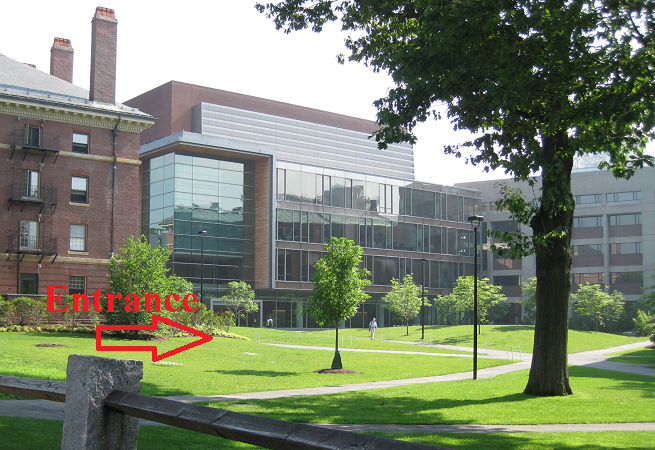
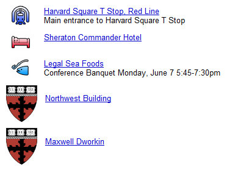

Conference Venue:
School of Engineering and Applied Science (SEAS) Harvard University, Cambridge, MA
Sunday Reception June 6:
Maxwell Dworkin Building
SEAS,
Harvard University
33 Oxford Street
Cambridge, MA 02138

Conference Venue and Registration
June 7-8:
Northwest Building
SEAS, Harvard University
52 Oxford Street
Cambridge, MA 02138

By subway (the "T") -- Take the SILVER Line to South Station (actually a bus that stops outside each terminal). Switch to the RED LINE outbound (toward ALEWIFE), go six stops and get off at HARVARD. The subway ride from Logan Airport takes approximately 45 minutes. The fare is $2.00 each way -- you should purchase a CharlieTicket from the kiosk in the Airport.
By taxi - The ride to Harvard Square takes about 20-30 minutes, depending on traffic, and costs about $40.
Map of conference venue, hotel, banquet and subway
Click here for a printable map of the conference venue, hotel, banquet and subway
Interactive Map: 
View directions in a larger, interactive map.
Traffic around Harvard is terrible. We encourage all attendees who are not staying at nearby hotels to use public transportation. If you do decide to drive, you may purchase a parking pass in advance to park at a garage adjacent to the Northwest building.
Visitor Parking at Harvard-Online Registration Instructions for 52 Oxford:
If you have any questions, please contact weis2010@econinfosec.org.
WEIS is co-located with the 11th ACM Conference on Electronic Commerce, June 9-11.